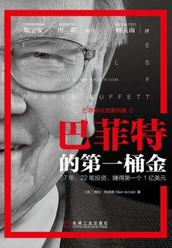

|  |
巴菲特的第一桶金 |
译者序 巴菲特“资金超越主意”的分水岭
这本书实际上是“巴菲特投资案例集”系列丛书的第一卷（共4卷）。
导言 48岁赚得1亿美元
我发现如果我必须将自己如何配置资本清晰地表达出来，而且需要公之于众，这种压力反而起到了某种激励作用。
在奥马哈之行中，我最为津津乐道的趣闻轶事是：我促成了巴菲特捐款400亿美元。没错，就是我促成了这件事。
第一部分 人物与情景
沃伦·巴菲特的故事
青年时代与合伙企业
伯克希尔-哈撒韦进入视野
跟本杰明·格雷厄姆学投资
巴菲特向格雷厄姆学到的其他理念
第二部分 投资案例
案例1 城市服务（Cities Services）
孩童时代
15岁时，他就能拿出1200美元，买下一个距离奥马哈70英里的占地42英亩的农场，由此大赚一笔（五年之后，该农场以2倍的价格出售）。
第一只股票
大学时光
像投机者一样追逐股票
案例2 盖可保险（Geico）
盖可保险的历史
盖可保险始创于1936年，它向那些在政府体制内工作的人提供汽车保险，它采取了一种非同寻常的销售手段。大多数保险同行都是通过代理人销售保险，但盖可保险认为这种销售方式的成本过于昂贵。公司认为如果能以邮件的形式直接将保险卖给客户，就可以为客户提供更为优惠的费率，并同时获得更佳的利润率。
周六，巴菲特来敲门
经过四个小时的交流，巴菲特对于一家保险公司的运作已经有了相当的了解，戴维森给他上了精彩的一课。他可以清楚地看到盖可保险公司具有两大竞争优势：
- 盖可公司销售保险的方式具有极大的低成本优势。
- 盖可公司的客户群体具有精准的定位，习惯于从盖可购买保险的群体是一个安全驾驶的群体，因此，保险风险很低。
盖可具有良好的发展前景，不仅是因为公司拥有一个精干的销售团队。盖可的利润率是同业平均水平的五倍。比这更令人惊喜的是，盖可公司还拥有数量可观的浮存金（即已经收取、尚未赔付的保费收入），这些现金可供投资之用。
从这里，我们看到了巴菲特早期深入分析企业的案例，看到他在心中树立的内在价值的观念。我们还可以看到巴菲特如何坚持独立判断，而不是简单听从所谓的专家意见。此行之前，他就与几位保险专家进行过交流，这些专家都认为盖可估值过高。当时，盖可保险的市场份额仅为1%，并被认为竞争能力脆弱，尤其是经纪人分销队伍薄弱。但是，巴菲特从格雷厄姆那里学到一个真理：你既不会因为大众同意你而正确，也不会因为大众反对你而错误。一切以事实为根据，而不是大众的看法。
案例3&4 克利夫兰精纺厂和加油站（Cleveland Worsted Mills And a Gas Station）
投资
1951年年底，巴菲特已经将自有资金增值到20000美元。此时，这个世界上他最尊重的两个人——格雷厄姆和他的父亲，都建议他不要进入股市，因为他们认为股价已经太高了。巴菲特并不同意他们的逻辑，他自作主张，认为1951年是进场买入好公司的绝佳时机。他认为潜在回报是如此诱人，以至于第一次借钱买了股票（他借了5000美元，相当于他净资产的1/4）。
失败案例1：克利夫兰精纺厂
除了股价仅有净资产价值的一半以外，该公司还有高比例的分红。这些综合在一起，使得该公司显然是一项很有吸引力的投资，巴菲特将它推荐给奥马哈股票经纪公司的客户们。但是接下来，情况发生了变化：公司面临来自美国南部各州纺织厂以及合成纤维的激烈竞争，出现巨额亏损，只得削减分红，股价也随之大跌。
净流动资产价值投资法
在公司资产负债表上，流动资产的估值数字并非以面值入账，在你对存货进行估值时，可能希望留有一个安全边际。例如，公司管理层通过会计师，得出某一个会计记账日的库存数字，包括仓库里的原材料、生产线上的半成品，以及尚未出售的成品。其中不乏某些公司高管带着乐观预期评估这些数字。
作为价值投资者，我们必须构建自己的安全边际，拒绝那些建立在最佳假设结果上的估值。也许一些旧有的库存现在已经过时，无法再按照原来的成本出售。
失败案例2：加油站
巴菲特曾经以合伙公司的形式，与一个朋友合伙在奥马哈买过一个加油站。不幸的是，这个加油站恰好位于德士古（Texaco）加油站的对面，而后者的生意一直比巴菲特的加油站好。令人惊讶的是，巴菲特曾经亲自上阵，充当工作人员，每个周末他都亲临现场，直接服务客户。
在这里，巴菲特学到了什么是竞争优势：德士古公司的加油站“运作成熟，拥有客户的忠诚，我们做什么都无法改变这些”。这次教训启发他后来做出了一些最佳投资，他学会了寻找那些在行业中客户忠诚度最高的公司，如可口可乐。
保持与格雷厄姆的联系
案例5 洛克伍德公司（Rockwood&Co.）
跟随格雷厄姆工作的两年是紧张忙碌的，巴菲特的主要工作，是在一间没有窗户的办公室里，研究数以百计的公司的数据。他整理出那些符合格雷厄姆标准的有关公司的简报，特别是净流动资产价值，将它们分门别类为：便宜的公司、被忽略的公司和失宠的公司。
洛克伍德公司
洛克伍德公司是一家巧克力豆（用于生产饼干）制造商，它长年亏损，但拥有大量的可可豆库存。更重要的是，当年可可豆的价格在飙升。如果洛克伍德公司直接在市场上出售可可豆，需要交纳数额不菲的税金。作为替代方案，公司的董事们找到格雷厄姆-纽曼公司，问他们是否有意收购，但洛克伍德公司的要价很高。
于是，洛克伍德公司找到另一位能干的投资人杰伊·普里茨克，问他是否愿意收购该公司。由于出售可可豆要被征收50%的重税，普里茨克想到了一个可以避税的办法。当时的一项新税法规定，如果一个公司缩小其经营范围，那么它清算相应部分的库存就可以免税。于是，普里茨克买下了公司的控股权，着手清算公司仓库里价值1300万美元的可可豆。但他没有选择直接卖掉这些可可豆。他的方案是，每个股东都可以用一股股票换取36美元的可可豆，而此时市场的股价是34美元。这样，就有了一个非常明确的套利机会。格雷厄姆察觉到了这个机会，他指示巴菲特买入洛克伍德股票，用于交换可可豆，然后再卖掉可可豆，这样，每一股就可以获得2美元的回报。
洛克伍德公司并不是直接给大家一袋袋的可可豆，实际上，它给每个买家开具显示持有可可豆的仓库仓单。为了防止可可豆仓单价格下跌，格雷厄姆-纽曼公司同时卖出可可期货（它可以保证在未来一个日期，可以某个固定价格提供固定数量的可可豆），如此一来就可以锁定他们的套利利润。一周又一周，巴菲特都在干着“买进股票、卖出可可期货”的工作。
巴菲特的困扰
这单套利交易，格雷厄姆-纽曼公司干得非常漂亮，但巴菲特相信自己可以做得更好。于是，他直接买进了222股洛克伍德的股票，他的逻辑是这样的：
- 约定的出价为每股可交换80磅可可豆。
- 洛克伍德公司拥有的可可豆数量，远远超出流通股数所对应的数量。
- 所以，如果你是公司股东之一，选择不将股票卖给公司，那么首先，你持有的股票每股所对应的，由公司持有的可可豆价值，应该超过36美元；其次，你的持股所对应的可可豆数量，会由于其他人出售股票给公司而增加。
- 除了可可豆，公司拥有的工厂、机器、设备、现金、应收账款等，也是有价值的。
普里茨克对此了如指掌，他是个非常聪明的家伙。巴菲特选择和他站在一起——买进股票。
结局
在普里茨克出价之前， 洛克伍德的股价是15美元， 后来涨到了大约100美元。 巴菲特赚了13000美元。
案例6 桑伯恩地图公司（Sanborn Maps）
巴菲特合伙公司取费模式及其表现
他约定如果某一年他的回报低于4%，那一年就不收费（这发生在1956～1961年期间）。高于4%回报的部分，巴菲特会得到分成。这种绩效费最初可以高达50%。从1961年开始，不收费门槛被重新设定为6%，超出的部分，绩效费为25%。
桑伯恩地图公司
巴菲特不但买了，而且需要控制甚至改变公司
案例7 邓普斯特农机制造公司（Dempster Mill）
邓普斯特农机制造公司
邓普斯特公司的麻烦
查理·芒格
起死回生
1962年4月，波特尔搬到了比阿特丽斯，主要工作是搞清楚邓普斯特公司亏损的原因，以及裁员。这不是一件容易的事，但必须这么干。
实现投资回报
案例8 美国运通（American Express）
重要的变化
美国运通
巴菲特出手
案例9 迪士尼（Disney）
巴菲特的行动
沃尔特向巴菲特展示了一项刚建成的娱乐设施，名为《加勒比海盗》，仅此一项设施就花费了1700万美元，这个数字相当于当时迪士尼公司总市值的1/5。巴菲特后来开玩笑说：“可以想象我是多么激动——一家公司的市值仅仅是一个娱乐设施造价的5倍！”
巴菲特的逻辑——费雪和芒格的因素多于格雷厄姆
案例10 伯克希尔-哈撒韦（Berkshire Hathaway）
伯克希尔
1955年之后的下滑
巴菲特一个“里程碑式的愚蠢”决定
决定性的回购
伯克希尔-哈撒韦：一个老板、一个总裁和一个不赚钱的生意
巴菲特不喜欢用期权作为奖励方式，因为这种方式不承担下跌的风险，它实际上是鼓励管理层用股东的钱去赌博。取而代之的是，他给肯·蔡斯提供了一个购买1000股股票的机会。蔡斯当时的年薪只有3万美元，没有足够的钱买这些股票。巴菲特提议借给他1.8万美元，蔡斯接受了这个提议。蔡斯凭着实力证明了自己的忠诚可靠，无论是作为一个职业经理人，还是对他的老板巴菲特。巴菲特现在可以用这家小公司做些伟大的事了。
最初的两年
案例11 国民赔偿保险公司（National Indemnity Insurance）
杰克·林沃尔特
1967年的国民赔偿保险公司
收购国民赔偿保险公司
1967年2月
巴菲特接手国民赔偿保险公司
一个律己保险商的肖像
严重的失策
案例12 霍希尔德-科恩公司（Hochschild-Kohn）
霍希尔德-科恩公司
1966年1月，巴菲特的一个朋友、投资银行家大卫·桑迪·戈特斯曼提醒巴菲特，一家位于巴尔的摩的百货公司处境不佳，可能有机会收购。这家公司就是霍希尔德-科恩，该公司竞争力疲弱，需要大量投资进行翻新改造。这是一家由科恩家族持有的私人公司，家族的下一代中几乎没有人愿意接班继承这项事业，而且他们知道公司支付不了太多现金股息。公司CEO马丁·科恩告诉戈特斯曼，他们打算卖掉公司，即便是“折扣价”也能接受。
从一开始巴菲特就明白，这项交易是“以三流的价格买进一个二流的百货公司”。但他喜欢资产负债表上的净资产情况（比公司市值高），以及隐匿性资产（没有记录在案的房地产价值），以及后进先出记账法下的库存，这意味着旧库存按照以前的价格估值，而不使用现在的价格。
结果如何
对霍希尔德-科恩投资案，芒格表示：“我们深受格雷厄姆思想的影响，我们认为如果你付出的资金能够获得足够的资产，无论如何都不会得到太坏的结果。我们没有考虑到在巴尔的摩有4家百货公司，竞争十分激烈。”
在这次三方合作对霍希尔德-科恩公司的投资中，巴菲特合伙公司、查理·芒格的基金和戈特斯曼先生的基金都录得了数额不大的亏损。零售业的问题是管理层要一直面对来自竞争对手的挑战。如果他们想出了一个好主意提升产品销量，竞争对手很快就会如法炮制，他们必须始终处于游戏的顶端才行。除此之外，他们还必须跟上竞争对手层出不穷的创新步伐。
正如巴菲特所说，零售业的管理层必须“每一天都保持聪明”，而其他行业的管理层即便在一段时间里表现平庸，也不会对公司造成毁灭性影响。所以，具有品牌的公司，例如《华盛顿邮报》、可口可乐和迪士尼，这些公司的管理层即便有一两年表现很差，他们也能维持特许权（在客户心中的地位）不受太大影响。百货公司没有这样宽松的环境。当然，也有卓越的零售商，他们每一天都很聪明，能年复一年地击败对手，但是这样的零售商很少。
系列书第1本，共3本。这是一本不厚的小书，对于按照时间顺序研究巴菲特这一路走来的故事很有用。因为是故事形式，读起来很快，笔记摘抄的内容并不多。以后遇到相关案例的话，可以按照笔记的目录再回翻此书。